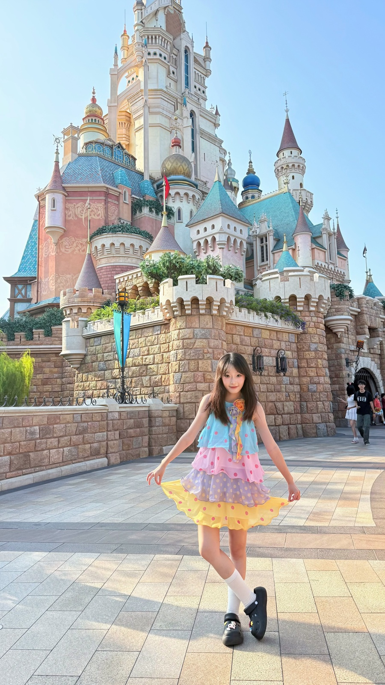
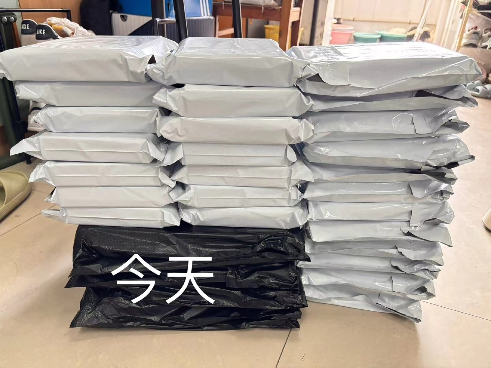

追现场的人
约人、赶路、排队、入场，现场总有计划外的变化。我习惯先看清状况，再想办法把下一步接上——热闹归热闹，事情也要有人收着。
Off duty · On the ground
我是个很容易被现场点燃的人。会为了喜欢的舞台跑去线下，也会和同好拼车、买周边、打包发货；忙完再钻进厨房，给自己做一顿热乎的饭。热闹我要，日子也要有滋有味。


People · Information · Scene
追星这件事，认真起来很像一个长线项目：约人、赶路、确认信息、随时处理临时变化。忙完以后，我收获的不只是快乐，还有更快的反应、更自然的沟通，和把琐事收好尾的习惯。
约人、赶路、排队、入场，现场总有计划外的变化。我习惯先看清状况，再想办法把下一步接上——热闹归热闹，事情也要有人收着。

拼车、周边、核对地址、打包寄出，看起来都是小事，但每件都要有回音。说过的事跟到底，包裹到了才算真的完成。

从现场回到家，钻进厨房，给自己做顿热乎的饭。工作要认真，生活也要有滋味；能照顾好自己，才有更多能量去照顾别人。
拼车群、同好群、寄件信息来回确认，慢慢学会了把话说清楚，也把人的感受照顾到。
排队、入场、临时改时间，现场不会总按计划走。我的习惯是先补位，再把下一步接上。
记录、核验、跟进，不发完一句“在吗”就消失。再琐碎的事，也愿意做到有结果。
我本来就在人群里，知道大家为什么笑、为什么等，也知道一场活动怎样让人愿意再来。
这些经历让我更熟悉“人、信息和现场”。需要媒介对接、商务沟通或现场执行时，我愿意先开口，也愿意在变化里把事接住。
生活不是工作的注脚，它是我理解人的方式。